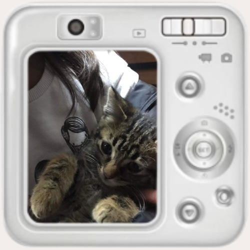
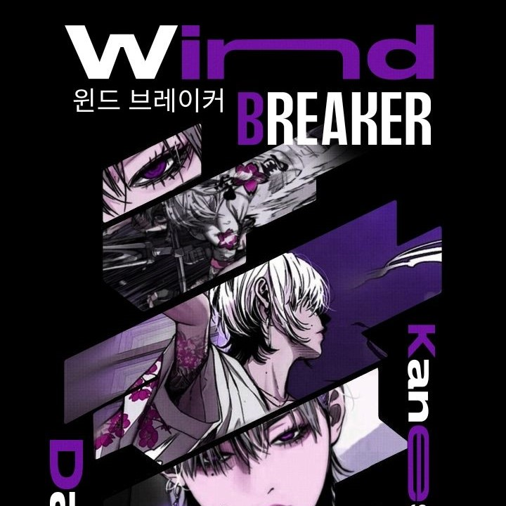
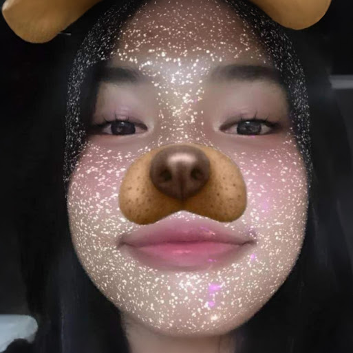
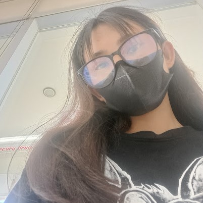
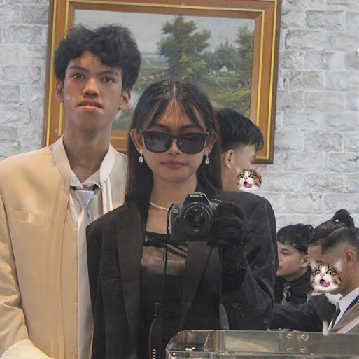
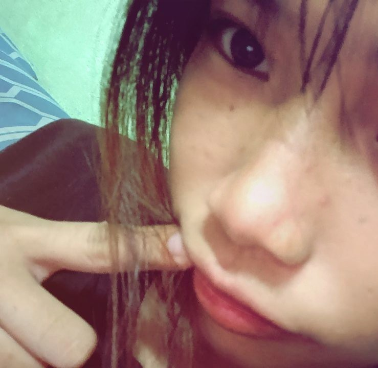
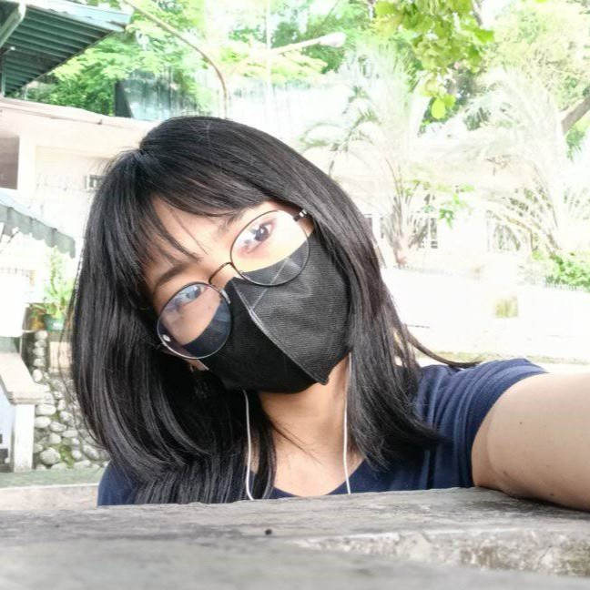
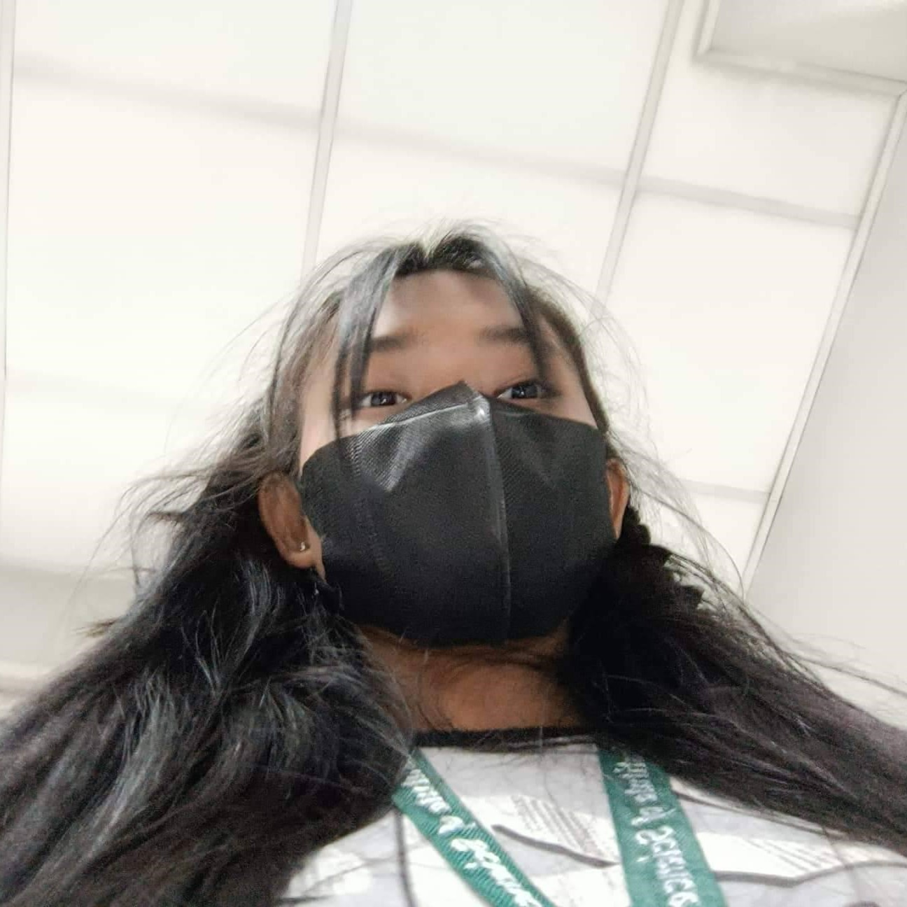
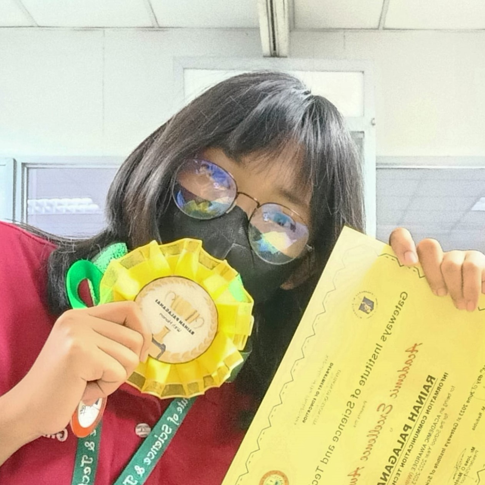

About Me
‹
›
I’m a student and aspiring web designer focused on clean UI, creative layouts, and turning ideas into interactive experiences. This portfolio shows who I am, how I design, and the work I’m growing through.
Capturing moments and exploring perspectives.
Staying active and enjoying competitive fun.
Relaxing and bonding with furry friends.
Exploring new worlds through books.




Photo & graphic editing.
Responsive layouts with clean structure & animations.
Interactive UI effects & scroll-based behaviors.
Skilled in journaling, and designing visual layouts and galleries.
Graduated from Alaminos Integrated National High School. Focused on UI design, web development, and creative digital projects. Learned to build personal websites, design user interfaces, and create digital graphics. Participated in school competitions and collaborated on group projects.
Graduated from Buenaventura E. Fandialan Memorial Integrated National High School. Studied fundamental concepts in science, mathematics, and computer basics. Developed problem-solving skills, critical thinking, and basic programming knowledge. Engaged in science fairs and hands-on experiments.
Graduated from San Agustin Elementary School. Built foundational skills in reading, writing, and problem-solving. Participated in school events, team activities, and early creative projects that shaped communication and teamwork skills.








I try things out and learn as I go.
I like keeping designs simple and easy to use.
I fix problems step by step without stressing too much.
I plan my projects but leave room to experiment.
I make sure my work looks good on any screen.